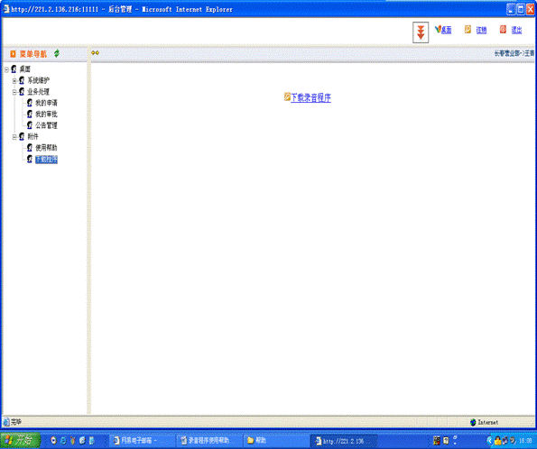
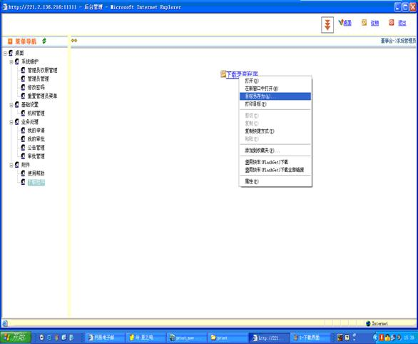
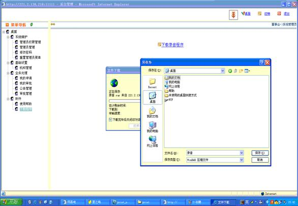
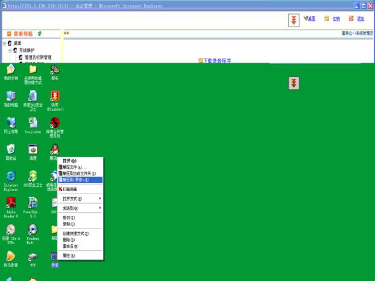
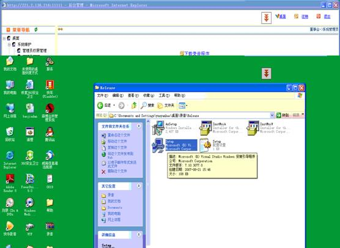
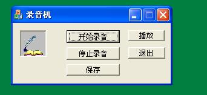
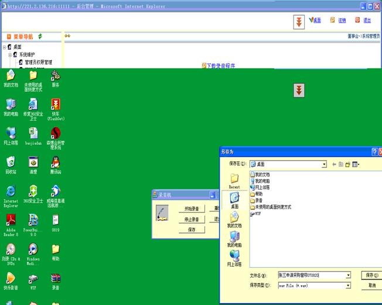
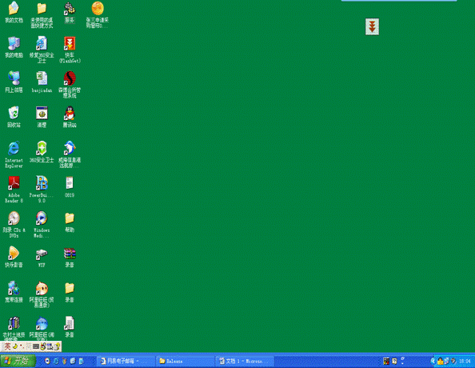

录音程序使用帮助
一、
首先以自己的身份和密码登录到系统。进入后会发现主界面左方的菜单导航导航栏目下，有一项“附件”，点开“附件”下面是“下载程序”，点击可以看到界面的右方是“下载录音程序”。如下图：

二、现在要把这个程序从网上下载并安装到自己的电脑上才能用。如何下载呢，把鼠标移动到“下载录音程序”这几个字上，这时候鼠标就变成一个 小手。然后点鼠标的右键，选择“目标另存为”，系统弹出窗口，让你告诉他保存在什么位置，这时候你点击这个弹出窗口左边的“桌面”按钮，程序就会自动下载到你电脑的桌面上。如下图：


三、保存完成后，你就会在你的桌面上看到录音程序的压缩文件，注意是压缩文件，需要将这个录音程序解压缩。方法是在这个文件上点鼠标的右键，选择“解压到录音”，系统就会将这个文件解开。这时候桌面又出现了一个“录音”的文件夹。如图：

四、双击桌面上的“录音文件夹”，然后再双击里面的“Release”文件夹，发现里面有一个文件的名字叫“setup”,双击运行安装程序。运行起来后，只需要不停的点“下一步”安装就自动完成。如图：

五、安装完毕后，桌面出现了“录音”的程序文件，双击运行。出现如下界面：

六、现在我们开始录音（前提是你必须要有话筒），方法是点击“开始录音”，这时候左边的图标开始不停的动，点击开始后，你就可以对着话筒说话，系统就开始录音，录音完成后，点击“停止录音”，然后点击“保存”按钮，系统又弹出窗口问你保存在什么位置，你可以选择点击左边的“桌面”按钮，然后在“文件名”后面输入你录音文件的名字（注意文件的名字最好写上你的名字＋申请的题目＋时间这样浏览的人一幕了然，事后你自己也明白），然后保存，完毕后系统桌面上就出现了你的录音啦。如图：

七、这时候再看桌面上的文件就出现了一个“张三申请购买窗帘

八、然后你就可以用审批软件把这个文件传输到需要申请的上级那里了。